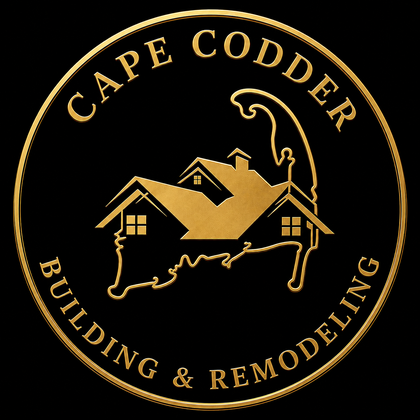

What can we build for you?
Pick your project, answer a few quick questions, and get a free, no-obligation quote from our local team — usually within one business day.

Pick your project, answer a few quick questions, and get a free, no-obligation quote from our local team — usually within one business day.